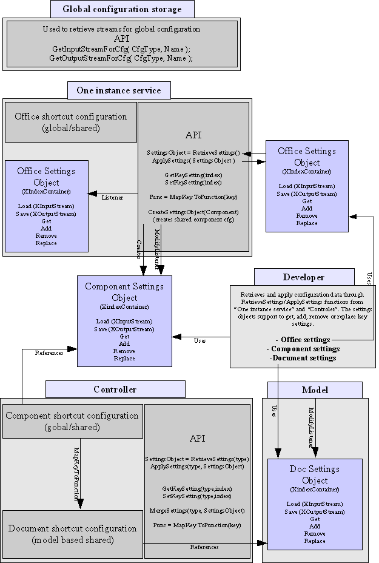

Proposal v0.2
A new keyboard shortcut implementation
Due to our efforts making the office accessible we have to solve some problems regarding keyboard shortcuts. This is a chance to enhance our current implementation for a better user convenience.
The following list shows problems regarding our current keyboard shortcut implementation:
The database and bibliography components are not sfx based. So these components are not able to use a component specific keyboard shortcut configuration. They are only bound to the global keyboard shortcut configuration implemented in the sfx project.
Currently we support keyboard shortcut configuration files, but we have to present a better integration for the user to easily adopt his office to other systems/office (See proposal from FLO “Keyboard Accessibility Concept” about MS Office compatible keyboard shortcut configuration).
We have two different keyboard shortcut configuration file formats. One is based on our old resource file format and supports different languages. If the user changes the keyboard shortcut configuration through our UI dialogs it is stored in our new XML format. Our xml based keyboard shortcut configuration doesn't support more than one language. So we have to find a way to create language specific XML files. We can write a converter that creates XML files out of our old resource file format automatically.
Our current implementation is not fine grained enough. We have a global keyboard shortcut configuration and a component based configuration (writer, calc, ...). We should introduce a new keyboard shortcut configuration that can be temporary used . For example complex dialogs can use this kind of keyboard shortcut configuration to improve their accessibility.
A new implementation should use our new XML configuration files. It should support sfx and non-sfx based components to enable a better integration of newly written components, like OpenOffice-based ones. So the new implementation must be based on UNO-interfaces and should support querying, changing, extending and applying configuration data through this API. This proposal describes an architecture that can be used for all our UI configuration data.
The new implementation has three configuration levels:
Office configuration level
The office configuration level stores data that is visible to all components. This level assures that common functions are mapped to a defined keyboard shortcut.Component configuration level
The component configuration level store data that is visible to one type of a component (like writer, calc). This level assures that common component functions are always the same for one component.Document configuration level
This configuration level stores data that is only visible to a document. It is possible to map document specific functions to a keyboard shortcut. For example a calc document can provide a private function to make a time consuming calculation that be easily access by a shortcut.

The implementation should work with two different kinds of configurations:
A one instance service that holds the office configurations and can create settings objects for all components (like writer, calc, ... ) that are available at runtime. So it works as a factory for component settings objects. The implementation can support new components if the “configuration storage service” is able to provide streams to the configuration of the component.
Model based configuration that has all configuration data that was stored for a single document.
The one instance implementation gives access to the office configuration and can create all supported component based settings objects through a XMultiServiceFactory interface. The controller has references to two different kinds of configurations:
Component shortcut configuration that is shared by all controller instances of a component.
Document shortcut configuration that is shared by all controllers of a model. They data is stored in the model. The access between controller and model is a private implementation detail.
The controller implements an interface to give access to the component and document settings objects. These setting objects support loading/saving a XML based configuration (through XInput- XoutputStream) and to get, add, remove and replace keyboard shortcuts. These settings objects can be applied to the controller or the global configuration. So it is possible to have generic access to this data for example for an UI dialog that supports changing the configuration. As the access is granted through UNO interfaces an external developer is able to use this implementation, too.
Saving and loading a configuration would work in the following way. The controller knows its “component” and the current configuration type (for example keyboard ). It asks the “global configuration storage service” for a stream that stores data for a “writer keyboard” configuration. So the knowledge output the real storage is only known by this service, all other implementation uses XInputStream and XOutputStream to fulfill their work. This stream is given to the concrete settings object that knows how to store its data as an XML stream and Save( stream ) is called.
The controller supports a function MapKeyToFunction to get a mapping between a com.sun.star.awt.KeyEvent and a function. It should first make a lookup into the office configuration to find a valid mapping if this is not successful the controller has to ask the component settings object and last the document settings object. So the call hierachy would be:
“office cfg” ->
“component cfg” ->
“document cfg”.
The MapKeyToFunction function returns a string that is one of the following types:
A slot command URL that can be dispatched.
A command string that must be executed in the component context, like “.uno:copy”, “.uno:cut”, “.uno:paste”. The command string must comply to the command URL specification “protocol:command”. The command part can be any kind of string. It would be even possible to have an encoded byte stream that could be executed by a special implementation.
The current sfx2 keyboard shortcut configuration implementation uses only a kind of merged “component shortcut configuration”. A closer look reveals that we can split this configuration into three different parts:
Office configuration that is the real base for all components.
Generic sfx based component configuration.
Component based configuration ( writer, calc, draw, ...).
The last two configurations should be loaded and merged into the “component” shortcut configuration” to fit into our new architecture if we are running on a system with old configuration layout.
This proposal just presents a new design for the keyboard shortcut configuration but it isn't restricted to this special type. There should be no problem to use the design to support also:
Menus
Toolbars
Statusbars
Events
Images